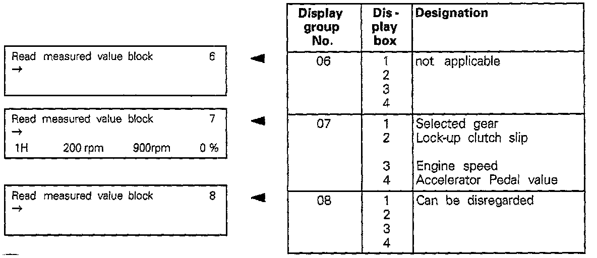

01M Transmission
MEASURED VALUE BLOCK - READING- Connect Scan Tool (ST) VAG 1551 and enter address word "02 Transmission electronics" and advance until "Select function XX" is indicated on display.
^ Indicated on display:
Rapid data transfer HELP
Select function XX
- Press keys 0 and 8.
- The function "Read measuring value block" is selected with 08.
^ Indicated on display:
Rapid data transfer Q
08 - Reading measured value block
- Confirm entry with key Q.
^ Indicated on display:
Reading measured value block
Enter display group number XX
Display Groups: 01-05:

Display Groups: 06-08:

- Enter desired display group number (Example: 01).
- Confirm entry with key Q.
- There are always 4 display zones in the measured value block. Decoding the individual values in display zones 1 to 4.
NOTE:
- If the printer is switched on, the current display is printed out on paper strip.
- If the specified values are obtained in all the display fields, press the --> key.
^ Indicated on display:
Rapid data transfer HELP
Select function XX